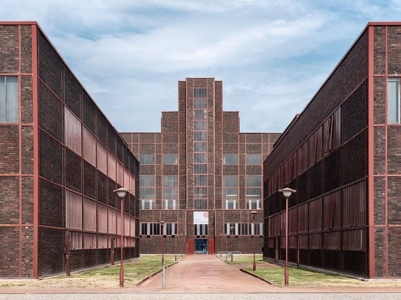
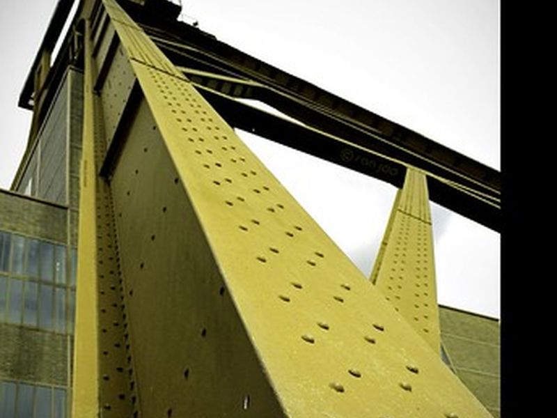
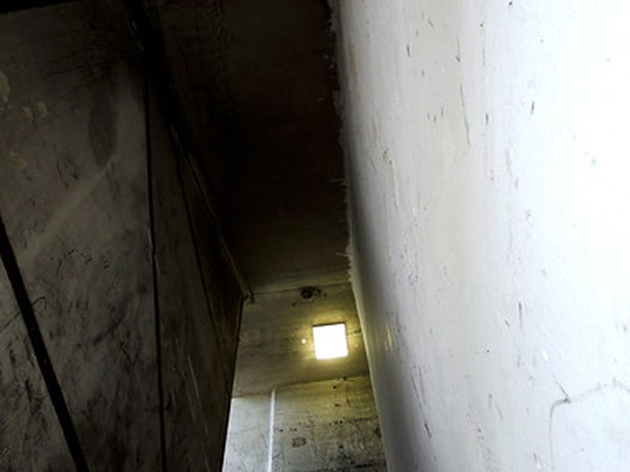
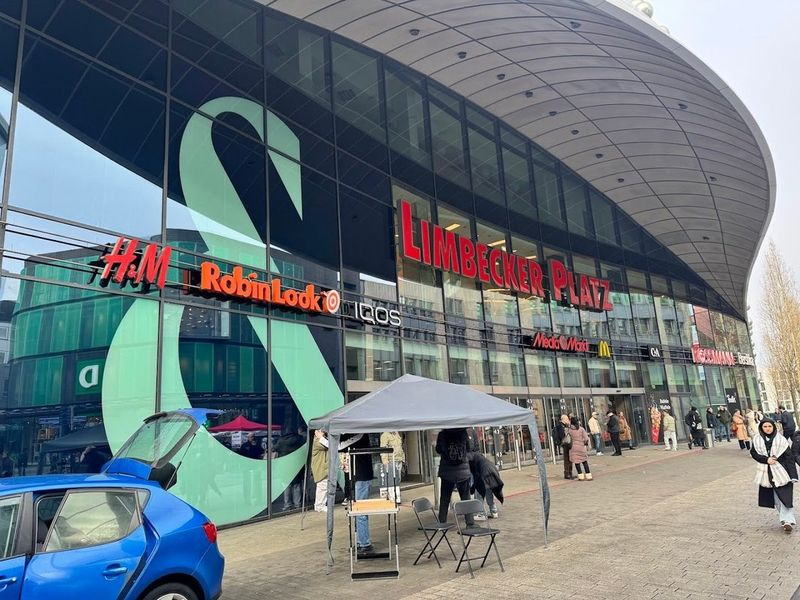
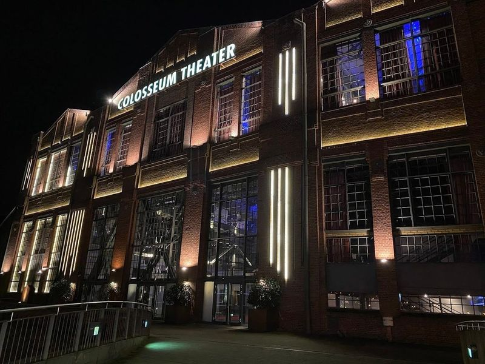
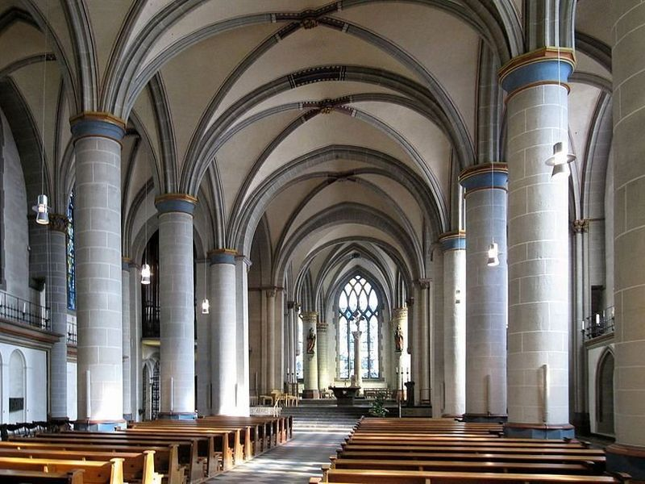
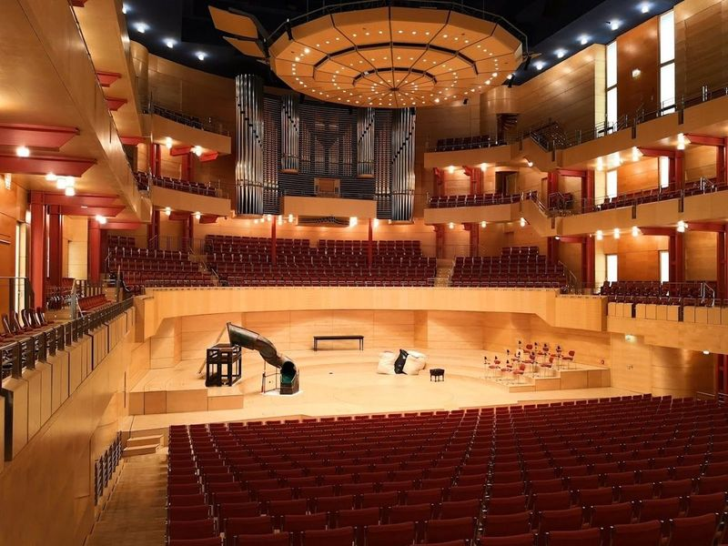
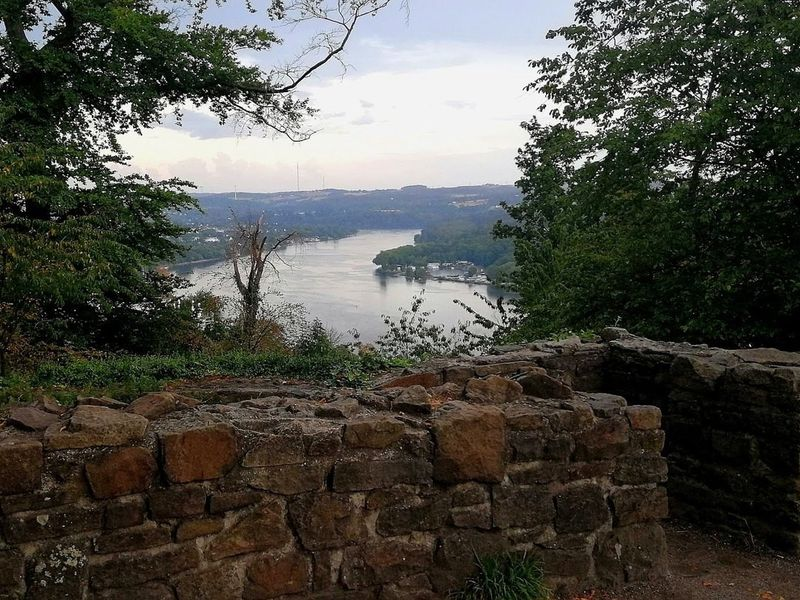
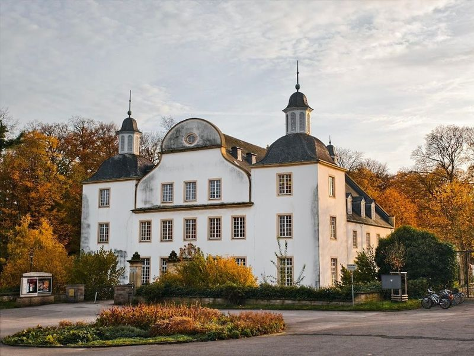
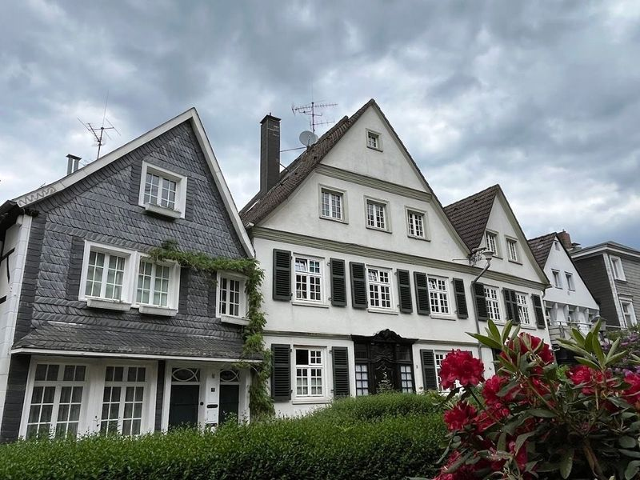

Explore Essen
A Brief History
Essen grew around Essen Abbey, founded in the 9th century, whose abbesses ruled a wealthy territory on the Ruhr River for centuries. Coal mining from the 19th century turned the city into a core of the Ruhr industrial belt, culminating in the Zollverein colliery complex. Post-war decline and 1980s pit closures prompted conversion of mines and steelworks into museums, parks, and the Zollverein UNESCO World Heritage Site that now anchors Ruhr cultural tourism.
Attractions Map
Top Sights & Activities

Zollverein UNESCO World Heritage Site
The Zollverein coal mine and coking plant in north Essen operated from 1847 until 1986 and once formed the world's largest coal-mining complex. Bauhaus-influenced Shaft XII and the coal washery were listed as a UNESCO World Heritage Site in 2001. Open walkways link the Ruhr Museum, Red Dot Design Museum, and preserved industrial halls across the 100-hectare grounds.

Shaft XII
Shaft XII at Zollverein, completed in 1932 to designs by Fritz Schupp and Martin Kremmer, became the emblem of the Ruhr coal industry with its central headframe and symmetrical Bauhaus layout. The preserved above-ground plant illustrates how coal was hoisted, sorted, and dispatched. Guided tours along the Denkmalpfad explain extraction technology and the daily work of miners before the pit closed in 1986.

Kokerei
The Zollverein coking plant, built from 1957 and once Europe's largest, converted coal into coke for steel furnaces until operations ended in 1993. Its towering batteries, quenching towers, and salt factory now form part of the UNESCO site. The Ruhr Museum Schaudepot inside the salt factory stores archaeological and industrial collections accessible only on guided tours through the industrial landscape.

Limbecker Platz
Limbecker Platz is a large city-centre shopping mall opened in 1997 on the northwest edge of Essen's inner city, with more than 200 stores across three floors. The glass-roofed atrium and underground car park replaced former industrial blocks near the main station. Retail chains and local brands occupy the complex, which draws shoppers from across the Ruhr conurbation.

Colosseum Theater
The Colosseum Theater occupies a former factory hall built in 1901 for the Krupp steelworks in Essen's inner city. After industrial use ended, the brick and steel structure was converted into a musical and concert venue while retaining its industrial character. The auditorium hosts touring musicals and live performances, and the exterior remains a visible example of Ruhr conversion architecture.

Essen Minster
Essen Minster, the former collegiate church of Essen Abbey on Burgplatz, preserves foundations from the 9th century and a treasury linked to medieval abbesses. The Gothic hall church and octagonal westwork house the Golden Madonna, one of Germany's oldest surviving sculpted figures of Mary. The adjacent Domschatz museum displays liturgical objects from the abbey's centuries of patronage.

Philharmonic Essen
The Philharmonie Essen, opened in 2004 beside the Aalto Theatre, serves as the home of the Essen Philharmonic Orchestra. Architect Alvaro Siza designed the white cubic concert hall with wraparound seating and a central organ. The building anchors the city's Kulturviertel cultural quarter and hosts classical concerts, recitals, and guest ensembles throughout the season.

Ruine Neue Isenburg
The ruins of Neue Isenburg stand on a rocky spur above the Baldeneysee reservoir in Essen's Stadtwald forest. The castle was built around 1240 and served regional lords until it fell into disrepair after the Thirty Years' War. Restored foundations, information panels, and a woodland trail explain the fortification's medieval role and offer views across the lake and surrounding woodland.

Schloß Borbeck
Schloss Borbeck in northwest Essen was the Baroque residence of Essen Abbey's prince-abbesses from the 14th century, rebuilt in its present form after 1744. The sandstone palace faces one of the Rhineland's oldest landscaped parks, redesigned in English style in the 18th century. The Kulturzentrum inside hosts a permanent exhibition on the abbesses and the palace's role in regional administration.

Historische Altstadt
The historic old town of Kettwig lines the Ruhr River in southern Essen, with half-timbered houses, a riverside promenade, and a preserved crane on the waterfront. Kettwig held town rights from 1372 and remained a separate municipality until incorporation into Essen in 1975. Cobbled lanes, the Altstadt bridge, and former textile mills record the settlement's trading and craft history.